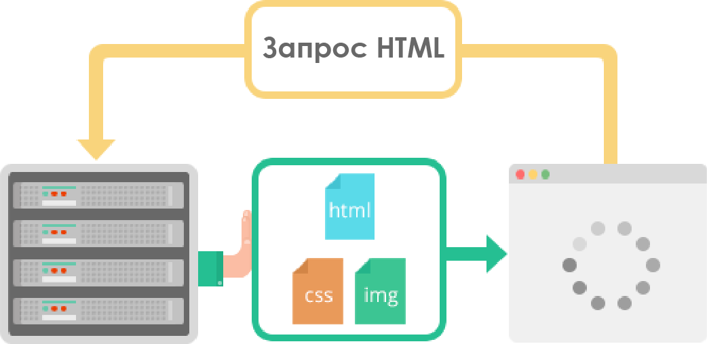
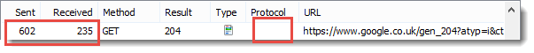

-
Параллельные запросы и ответы не блокируют друг друга
-
Используется одиночное TCP-соединение.
-
Оптимизационные хаки больше не нужны
-
Задержки ниже, производительность сети выше, лучше ранжирование поисковыми системами.
Server Push
-
Передаваемые ресурсы сохраняются в кэше клиента
-
Клиент может многократно использовать эти ресурсы на разных страницах
-
Сервер может мультиплексировать передаваемые ресурсы вместе с запрошенной информацией в рамках одного TCP-соединения
-
Сервер может приоритезировать передаваемые ресурсы. Ключевое отличие в производительности от HTTP/1
-
Клиент может отключить функцию Server Push или ограничить кол-во мультиплексированных потоков
Бинарный протокол
-
Низкие расходы при парсинге данных. Ключевое преимущество HTTP/2 над HTTP 1
-
Меньше нагрузка на сеть, ниже вероятность ошибок
-
Решение проблем с безопасностью, выше эффективность и устойчивость к сбоям при обработке данных
-
Реализует прочие возможности HTTP/2: сжатие, мультиплексирование, приоритезацию и т.д.
-
Снижение сетевой задержки и повышение пропускной способности
HPack

-
Эффективная приоритезацию потоков
-
Эффективное использование механизмов мультиплексирования
-
Снижает накладные расходы при использовании ресурсов. Опять же - ключевое преимущество HTTP/2 над конкурентами
-
Кодирование больших и часто используемых заголовков - позволяет не отправлять весь фрейм с заголовком



Тест #1 – Размер заголовков
ПОБЕДИТЕЛЬ: HTTP/2
HTTP/2 имеет ощутимо меньший размер заголовков, благодаря использованию алгоритма HPack
HTTP/2 имеет ощутимо меньший размер заголовков, благодаря использованию алгоритма HPack
Тест #2 – Размер сообщения ответа
ПОБЕДИТЕЛЬ: SPDY
Хотя у HTTP/2 больший по размеру ответ, чем у SPDY, его зашифрованные соединения потенциально могут быть более безопасными. Это ставит нас перед выбором между безопасностью и производительностью.
Хотя у HTTP/2 больший по размеру ответ, чем у SPDY, его зашифрованные соединения потенциально могут быть более безопасными. Это ставит нас перед выбором между безопасностью и производительностью.

Равнозначные победители: SPDY & HTTP/2
Алгоритм мультиплексирования дает возможность SPDY и HTTP/2 сократить кол-во соединений, требуемых для загрузки страницы
Тест #4: Время загрузки страницы